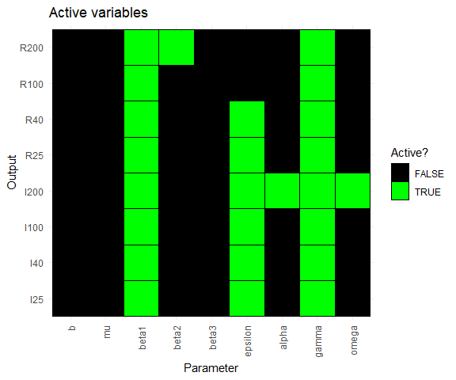
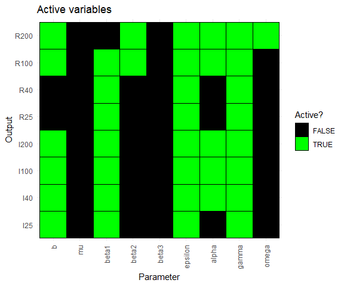
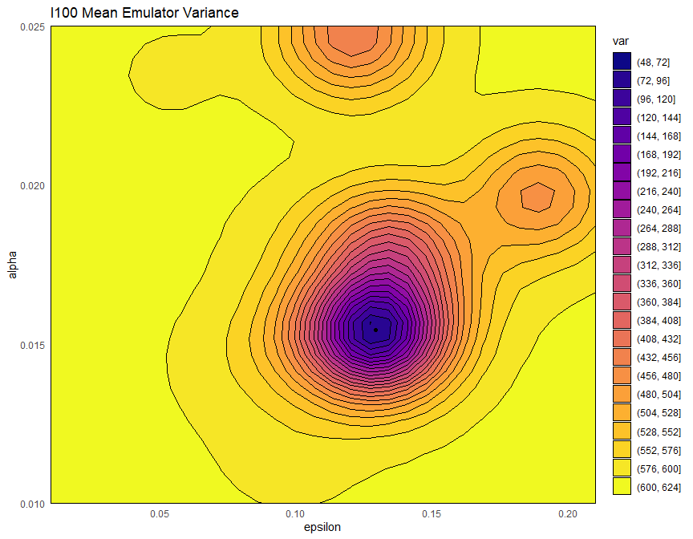

5 Emulators
In this section we will train stochastic emulators, which take into account the fact that each time the model is run using the same parameter set, it will generate different output.
5.1 Brief recap on the structure of an emulator
We very briefly recap the general structure of a univariate emulator (see Workshop 1 for more details):
\[f(x) = g(x)^T \xi + u(x),\]
where \(g(x)^T \xi\) is a regression term and \(u(x)\) is a weakly stationary process with mean zero.
The regression term, which mimics the global behaviour of the model output, is specified by a vector of functions of the parameters \(g(x)\) which determine the shape and complexity of the regression hypersurface we fit to the training data, and a vector of regression coefficients \(\xi\).
The weakly stationary process \(u(x)\) (similar to a Gaussian process), accounts for the local deviations (or residuals) of the output from the regression hypersurface.
In this workshop, \(u(x)\) is assumed to be a Gaussian process, with covariance structure given by
\[\text{Cov}(u(x), u(x'))= \sigma^2 c(x,x^{\prime}) \]
where \(c\) is the square-exponential correlation function
\[c(x,x^{\prime}) := \exp\left(\frac{-\sum\limits_{i}(x_{i}-x_{i}^{\prime})^2}{\theta^2}\right)\]
where \(x_i\) is the ith-component of the parameter set \(x.\) The term \(\sigma^2\) is the emulator variance, i.e. the variance of \(u(x)\), and reflects how far we expect the output to be from the regression hypersurface, while \(\theta\) is the correlation length of the process, and determines how close two parameter sets must be in order for the corresponding residuals to be non-negligibly correlated.
emulator_from_data function first estimated the value for \(\sigma\), using the provided training data. It is important to note that this estimated value of \(\sigma\) was constant, i.e., it was the same for all parameter sets. When working with stochastic models, different areas of the parameter space often give rise to quite different levels of stochasticity in the outputs. Taking this phenomenon into account when dealing with stochastic models will allow us to train more accurate and efficient emulators.
5.2 Stochastic emulators
To train stochastic emulators we use the function variance_emulator_from_data, which requires the training data, the names of the outputs to emulate, and the ranges of the parameters:
stoch_emulators <- variance_emulator_from_data(all_training, output_names, ranges)The function variance_emulator_from_data returns two sets of emulators: one for the variance and one for the expectation of each model output. Behind the scenes, variance_emulator_from_data does the following:
First, it estimates the variance of each model output of interest at each provided parameter set: this is possible since
all_trainingcontains several model runs at each parameter set.Using the obtained variance data, it then trains an emulator for the variance of each of the outputs of interest. These emulators will be referred to as variance emulators and can be access typing
stoch_emulators$variance.Finally, emulators for the mean of each output are built. These emulators will be referred to as mean emulators and can be accessed typing
stoch_emulators$expectation. The main difference in the training of emulators between the stochastic and the deterministic case is that here, for each output, we use the variance emulator to inform our choice for a component of \(\sigma\), that which is due to the stochasticity of the model: for each parameter set \(x\), the variance emulator gives us an estimate of the variance of the model output at \(x\). Note that this step is specific to the treatment of stochastic models, where it is important to account for the fact that different areas of the parameter space often give rise to quite different levels of stochasticity in the outputs.
Let’s take a look at the two sets of emulators stored in stoch_emulators, starting with plots of active variables:
plot_actives(stoch_emulators$variance)
plot_actives(stoch_emulators$expectation)
These plots show what variables are active, i.e. have the most explanatory power, for each of the mean and variance emulators. We see that \(b\) and \(\mu\) are inactive for almost all outputs in the variance emulators, even though they are active for some outputs in the mean emulators. Parameters \(\beta_1\), \(\epsilon\), \(\alpha\) and \(\gamma\) are active for most or all outputs in the mean emulators.
As in the deterministic case, the emulator_plot can be used to visualise how emulators represent the output space. Since we have two sets of emulators, we have several options in terms of plots. The default behaviour of emulator_plot is to plot the expectation of the passed emulator: for example, to plot the expectation of the variance emulator for \(I40\), we just need to pass stoch_emulators$variance$I40 to emulator_plot.
It is important to stress the following point: unlike in the deterministic case, here mean emulators do not have zero variance at ‘known’ points, i.e., at points in the training set. Let us verify this, by plotting the variance of the mean emulator for \(I100\) in the \((\epsilon,\alpha)\)-plane, with all unshown parameters to be as in the first row of all_training. Note that since the plot produced below depends on the location of the first run, when running the code with your own all_training you will get a different result:
emulator_plot(stoch_emulators$expectation$I100, params = c('epsilon', 'alpha'),
fixed_vals = all_training[1, names(ranges)[-c(6,7)]], plot_type = 'var') +
geom_point(data = all_training[1,], aes(x = epsilon, y = alpha))
We see that the black point in the dark blue area, corresponding to the first point inall_training, does not have variance zero. This is because the mean emulator is trying to predict the ‘true’ mean at the point, but it has only been given a sample mean, which it cannot assume is equal to the ‘true’ mean. The emulator internally compensates for this incomplete information, resulting in the variance not being zero, even at points in the training set. This compensation also means that we can work with different numbers of replicates at different parameter sets. In general, for each training/validation parameter set, we should use as many repetitions as is feasible given the model complexity. More repetitions will provide a better estimate of the variance, which in turn allows to train more accurate mean emulators. If a model is relatively fast, then it is worth doing 50-100 repetitions per parameter set; if it is slower, then we can work with fewer repetitions (even just 5-10 per parameter set). This applies to different regions of the parameter space within a single model, too: if one part of the parameter space is much slower to run (e.g. parameter sets with higher beta values, which tend to produce more infections, slowing down agent-based models), then we could run fewer repetitions in those parts of parameter space.